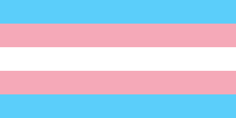

Page two!
I'm writing an HTML website!
About Me
Hello! My name is bears! I'm doing HTML.
Trans rights!

Facts about me:
- I like HTML
- I like bears
-
- I like lists in lists
- I like bears in lists
My favourite Blaseball players in no particular order
- Chorby Short
- Annie Roland
- Washer Barajas
- Famouse Oconnor
Click here for bears